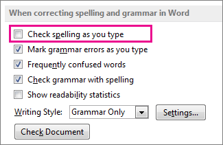
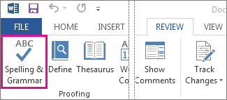

You fix the mistake, but you've lost your flow, your idea. To avoid that distraction, you can turn spell check off, then check spelling manually when you're done writing. Here's how.
Click File > Options > Proofing, clear the Check spelling as you type box, and click OK.

To turn spell check back on, repeat the process and select the Check spelling as you type box.
To check spelling manually, click Review > Spelling & Grammar.
